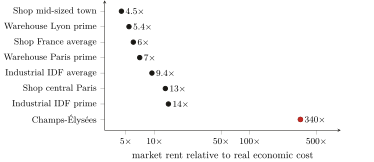
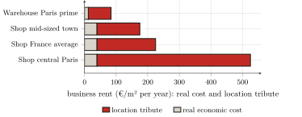

— AI translation — Claude Fable 5 (Anthropic)
Part Three — The empirical measurement of capture · Chapter 10
10 Business rent and the production chain: the worker
The preceding chapter measured the tribute the inhabitant pays directly, in his rent: 126 billion. But the inhabitant is also a worker and a consumer, and it is by this second route that the tribute reaches him once more, indirectly, and most often without his knowledge. The shopkeeper who sells, the industrialist who produces, the warehouse that stores likewise pay a rent on the walls they occupy; and this rent they do not bear: they pass it on downstream, in the price of commodities, all the way to the final consumer. This is the mechanism that chapter 5 established in principle1 and that must now be quantified. We shall first measure this business rent; then we shall examine, without conflating it with it, a neighbouring extraction that the worker likewise bears: the margins stacked along the chain that produces buildings and their materials.
10.1 The tribute on places of business
The law is the same as in chapter 9, but pushed further, for location value is more concentrated there still. It can be read in the ratio of the market rent to the real economic cost of the premises — building amortised, maintenance, land counted for nothing. For retail premises, this real cost is on the order of €39 per square metre per year; for a warehouse or industrial premises, on the order of 12.2
Compare with actual rents. A shop in a mid-size town already lets for four to six times this cost; in the heart of Paris, thirteen times.3 And where centrality reaches its peak, the ratio becomes dizzying: on the Champs-Élysées, the prime rent exceeds twelve thousand euros per square metre per year, on the order of three to four hundred times the real cost of the premises.4 It is not that one builds differently there; it is that the address value, made by the whole metropolis, is pocketed there by the sole owner of the land. Logistics and industry confirm the rule on locations less prestigious but just as contested: a prime warehouse in the Paris region lets for seven times its real cost, industrial premises in the Paris region for nine to fourteen times (figure).5

In every case, the decomposition is that of chapter 9, but more unbalanced still: the real cost of the premises is only a thin fraction of the rent, and all the rest is location tribute (figure). For a Paris town-centre shop, the building and its maintenance account for less than a tenth of what is paid; on the Champs-Élysées, for a few thousandths.

This rent the shopkeeper or the industrialist pays; but he pours it back into his prices, and it is the consumer who, in the last resort, pays it. The location tribute of a store turns up in the price of what one buys there; that of a warehouse, in the price of what one has delivered from it. The worker who thought he paid only one rent (that of his dwelling) in fact pays, without seeing it, a fraction of all the commercial rents of the circuit that supplies him.
10.2 How much? — and with what margin of uncertainty
It remains to total it up, and the method is simple in principle: multiply, for each segment, the floor area of the stock by the tribute per square metre (the rent minus the real cost). But here it runs into a limit: the floor area of the business building stock is poorly known, far more poorly than the rents. The quantification of this chapter is therefore, by construction, less firm than that of chapter 9, which rested on the SDES aggregates.
We shall establish it conservatively, taking the low assumption each time. The retail stock, according to the cadastre, is on the order of 330 to 365 million square metres of shops; the logistics stock, 89 to 93 million for warehouses above ten thousand square metres alone.6 By relating the tribute only to the fraction of this stock actually let to a third-party rentier (and not to the entire stock, part of which is occupied by its owner), one obtains a business rent on the order of 36 billion euros a year: about 24 for retail, 5 for industry, 4 for logistics, and 3 for key money and lease rights. These last two deserve a word, for they show rent in its pure state: the pas-de-porte is the sum a shopkeeper pays the landlord, in advance and on top of the rent, to obtain the premises; the droit au bail, its equivalent paid to the outgoing tenant who gives up his spot. Commonly six months’ to two years’ rent, paid before having sold anything — and paying for no service, no stock, no walls: the right to enter at the location, cashed up front.7
This number is more fragile than the 126 billion for housing, and its weak link is the retail stock: the actual floor area of shops being more than twice the estimate on which it is computed, the figure of 24 billion for retail is, keeping the same rents, a floor far more than a ceiling.8 So we shall give this total for what it is: a central, prudent estimate, in a range we put between 30 and 55 billion. Added to the 126 billion for housing, it brings the measured land tribute to about 162 billion euros a year, a sum which chapter 11 will total and from which it will draw the law.
10.3 The production chain: a neighbouring levy, not to be conflated
Business rents are not the only levy the worker bears: he also pays, in the price of materials and products, the margins levied by the long chain of intermediaries that makes and distributes them. The finding is clear, provided it is not filed where it does not belong.
The fact, first. Between a construction material’s factory-gate price and its price to the French consumer, the ratio commonly runs from three to nearly fourteen, with a median around five.9 The margin does not lodge just anywhere: it is thin at the two ends that touch the building (the developer and the construction firm earn only a few points, the DIY retailer barely more in France) and thick in the middle, among the materials manufacturers, who are oligopolies.10 In total, the price mark-up attributable to the capital of this chain is on the order of a few tens of billions; its strictly “capital” share (once logistics, certification and wages, which are real costs, are deducted) is around fifteen billion.
The place of this finding, next. This extraction is not rent on space (it is classic capitalist parasitism), so it cannot be aggregated with it. Chapter 1 drew the line: land is not produced, and that is what makes the land tribute a levy without counterpart. A circuit breaker, for its part, is produced; a bag of cement is produced. The oligopolistic margin that makes them dearer belongs to the profit of capital on reproducible goods, governed by competition and market position — not to the non-reproducibility of land. To conflate it with ground rent would be to commit exactly the category error that the whole of part II denounced: naturalising one social relation into another. That is why we name this extraction, we gauge its order of magnitude, but we keep it out of the land-tribute total. It is a cousin of it, not a member.11
Taking stock
The tribute on space does not weigh on the inhabitant alone: it weighs on the worker, through the rent of the places where goods are produced, stored and sold, which he pays without seeing it in the price of everything he consumes. This business rent (on the order of 36 billion euros a year, a prudent estimate and more fragile than that for housing) brings, added to the 126 billion of chapter 9, the measured French land tribute to about 162 billion. Alongside it, and distinct, another extraction burdens the price of goods: the margins of the chain that produces the built stock. We have named and measured it, but kept it out of the account, for it belongs to profit on things produced, not to rent on a land that is not.
Chapter 5: the capitalist who rents his shop pays a toll to his landlord, but his social position is not defined by that, for he passes it on to the final user. The ultimate incidence of business rent therefore falls on the consumer — that is, on the worker.↩︎
Calculations analogous to those of chapter 9: retail building ≈ €1 500/m² amortised over 50 years plus maintenance, i.e. ≈ €39/m²/yr; warehouse ≈ €500/m², industrial premises ≈ €400/m², i.e. ≈ €12/m²/yr. Construction costs as orders of magnitude; the land, free by assumption, is precisely what the market charges on top.↩︎
Commercial rents: (Valoris Real Estate 2024) (Paris hypercentre ≈ €525/m²/yr, i.e. ≈ 13×); average French shop ≈ €200–250/m²/yr, i.e. ≈ 6×. The cost of the building does not vary by a factor of thirteen between a busy street and an ordinary one; only the location tribute varies.↩︎
(Cushman & Wakefield 2024): prime rent on the Champs-Élysées €12 519/m²/yr (the world’s fifth retail thoroughfare); Knight Frank gives up to 16 000. The ratio (from 320× to 410× depending on the source) is stable: we retain “on the order of 300 to 400×”. This is Harvey’s monopoly rent carried to its peak (chapter 4): the address, produced by the entire city, captured in its pure state by the holder of a title.↩︎
Logistics: (CBRE France 2024) (Île-de-France €84/m²/yr, Lyon 67; ratios 7× and 5.4×). Industrial premises in Île-de-France: on the order of €100 to 180/m²/yr (ratios 9 to 14×); a less firm market figure than the previous one, to be taken as an order of magnitude.↩︎
Retail: (Cérema 2023) (land files 2021; the “shops” categories of the cadastre sum to ≈ 330–365 million m² depending on the perimeter retained). Logistics: (Service des données et études statistiques (SDES) 2025) (93 million m² at the end of 2024 for warehouses ≥10 000 m², the tail of smaller ones being excluded). The industrial stock, for its part, has no authoritative floor-area measure — and this structurally: the rental value of industrial premises being established “in the firm’s accounts” (the accounting method, art. 1499 of the General Tax Code; (Direction générale des finances publiques (DGFiP) 2024)), the administration has no need to record their floor area, and does not. Cérema warns moreover that this floor area, in the land files, “is […] not necessarily well recorded” and that it is “often unreliable” (Cérema 2024). We therefore hold to an order of magnitude — around 100 million square metres, in a range of 70 to 150 — reconstructed not from a floor-area statistic, which does not exist, but from the DGFiP’s count of industrial buildings: about 200 000 (Direction générale des Finances publiques 2023).↩︎
Key money commonly amounts to six months’ or two years’ rent; but it is a professional custom, freely negotiated, not a published statistic (Bpifrance Création 2024): the €3 billion retained is an order of magnitude. Over the whole, the firmest line is logistics (firm rents, measured stock); the most uncertain, industry (stock unknown).↩︎
The cadastre gives ≈ 342 million m² where the calculation retains 150. Correcting the stock upward, without deducting anything from the rent or the let share, would carry the retail capture well beyond 24 billion. We preferred the low assumption: the perimeter retained is that of premises actually let to a rentier, the most defensible, and the most conservative.↩︎
Comparative table drawn up from factory-gate prices (Europe, or FOB China) and French retail prices (Castorama, Leroy Merlin): cement 3.9×, rebar steel 3.3×, tiling 6×, modular circuit breaker 13.8×; median 4.7×, mean 5.7×. The ratio grows with how manufactured, small and transportable the product is — that is, with the length of the chain of intermediaries.↩︎
Operating margins 2024: Saint-Gobain 11.4 % (Compagnie de Saint-Gobain 2025), Schneider Electric 18.6 % (Schneider Electric 2025), Legrand 20.5 %, Holcim 19.1 % — against ≈ 5.9 % for electrical-equipment distribution (Rexel 2025) and ≈ 2.4 % for DIY retail in France (Kingfisher plc 2025). The margin concentrates where the market position is most protected.↩︎
Only one thread genuinely ties it in: the rent of the warehouses and stores that these distributors themselves occupy turns up in their prices — but that rent is already counted in the business rent of the preceding section. To aggregate it a second time under the label “chain” would be a double count.↩︎